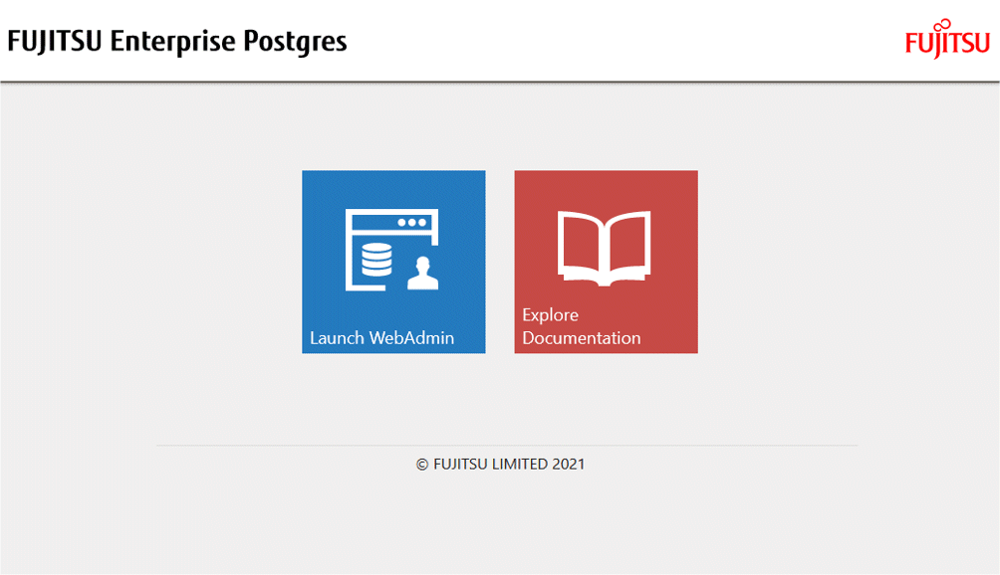

This section describes how to log in to WebAdmin.
It is recommended to use the following browsers with WebAdmin:
Internet Explorer 11
Microsoft Edge (Build41 or later)
WebAdmin will work with other browsers, such as Firefox and Chrome, however, the look and feel may be slightly different.
In the browser address bar, type the startup URL of the WebAdmin window in the following format:
http://hostNameOrIpAddress:portNumber/
hostNameOrIpAddress: The host name or IP address of the server where WebAdmin is installed.
portNumber: The port number of WebAdmin. The default port number is 27515.
Example
For a server with IP address "192.0.2.0" and port number "27515"
http://192.0.2.0:27515/
The startup URL window shown below is displayed. From this window you can log in to WebAdmin or access the product documentation.

Note
You must start the Web server feature of WebAdmin before using WebAdmin.
Refer to "Appendix F Starting and Stopping the Web Server Feature of WebAdmin" for information on how to start the Web server feature of WebAdmin.
Log in to WebAdmin
Click [Launch WebAdmin] in the startup URL window to start WebAdmin and display the login window.
To log in, specify the following values:
[User name]: User name (OS user account) of the instance administrator
[Password]: Password corresponding to the user name
Point
Use the OS user account as the user name of the instance administrator. Refer to "Creating an Instance Administrator" in the Installation and Setup Guide for Server for details.